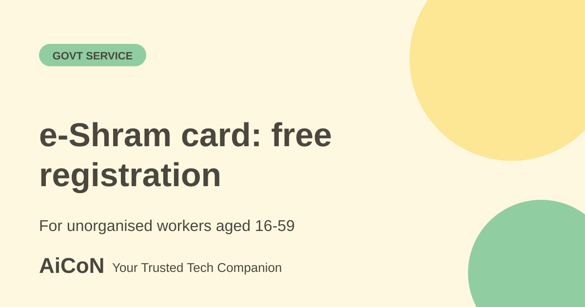

e-Shram card: free registration for unorganised workers
e-Shram is the government's database of unorganised workers. A free registration gives you a Universal Account Number and a way to reach welfare schemes from one portal.

What is e-Shram?
e-Shram is the National Database of Unorganised Workers, launched in 2021 by the Ministry of Labour and Employment. PIB says it is Aadhaar-seeded and gives every registered worker a Universal Account Number (UAN). By August 2026 it had over 31.89 crore registrations.
Who can register?
- Home-based, self-employed or wage workers in the unorganised sector who are not members of ESIC or EPFO. The portal names agricultural, construction and domestic workers, street vendors, migrant workers and gig and platform workers.
- The portal FAQ says age 16 to 59, but the newer August 2026 PIB note says 16 and above. If you are 60 or older, confirm current registration eligibility through the official helpdesk rather than relying on one page.
- No income limit, but the worker should not be an income tax payee.
What do you get?
PIB says the e-Shram One-Stop Solution, launched on 21 October 2024, brings together 15 social security and welfare schemes on one platform, including PM-SYM, PMSBY, PMJJBY, the National Social Assistance Programme, One Nation One Ration Card and PM Awas Yojana. It also links to the National Career Service for jobs and to the Skill India Digital Hub. Eligible workers can enrol in PM-SYM, which offers a minimum assured pension of Rs 3,000 a month at age 60, subject to eligibility. Registration does not mean every scheme is granted automatically. Each scheme has its own conditions.
How to register, step by step
- Keep your Aadhaar number and an Aadhaar-linked mobile number ready.
- Open eshram.gov.in and choose to register as a self-registration user.
- Enter your Aadhaar details and verify with the OTP sent to your linked mobile.
- Fill in your occupation, address, education and bank details as asked.
- Submit and download your e-Shram card with the UAN.
- No Aadhaar-linked mobile? Visit a Common Service Centre or State Seva Kendra and register with biometric authentication.
The portal advises registrants to update their profile and occupation to keep receiving benefits.
| Cost | Free on the official portal. Never pay for a card. |
|---|---|
| Helpdesk | 14434 or 1800 889 6811, 9 AM to 6 PM daily, per the portal. |
| Languages | The portal added 22-language support in 2025, per PIB. |
What changed since the short post?
Official sources differ on age. The portal FAQ says 16-59, while the newer August 2026 PIB note says 16 and above. Registration alone does not automatically grant insurance or cash benefits.
Frequently asked questions
Is e-Shram insurance?
No. It is a registry and a gateway. Insurance such as PMSBY is a separate scheme with its own enrolment.
Do I need a bank account?
Schemes that pay money usually do. Ask on the helpdesk for your case.
I pay income tax. Can I register?
The FAQ says the worker should not be an income tax payee.
Sources: e-Shram FAQs, PIB: e-Shram completes five years. Checked 6 October 2026.